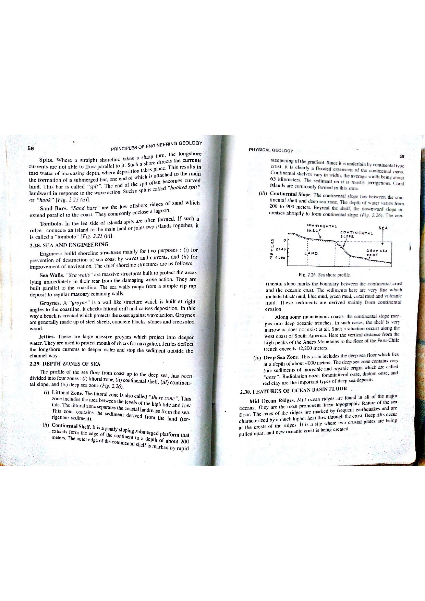

Q148: Water Well Drilling in the Bhabar Piedmont: Why Cable Tool Percussion is the Proven Standard
The Bhabar Zone is a continuous, $10\text{ to }25\text{ km}$ wide piedmont alluvial belt situated along the southern foothills of the Siwalik range / Outer Himalayas in northern and eastern India (Uttarakhand, Uttar Pradesh, Himachal Pradesh, West Bengal, and Assam) (CGWB, 2018; Bangar, p. 35; Todd & Mays, 2005).
From an engineering and hydrogeological drilling perspective, the Bhabar formation presents one of the most hostile and challenging sub-surface environments in the world:
- Lithological Chaos: The formation comprises unassorted, coarse torrent deposits including massive quartzite, granite, and sandstone boulders (ranging from $30\text{ cm}$ to over $1.5\text{ meters}$ in diameter), gravels, pebbles, and coarse sands with virtually no binding clay matrix.
- Extreme Hydraulic Conductivity & Porosity: The boulder matrix possesses cavernous void spaces and enormous hydraulic conductivities ($K > 100 - 300\text{ m/day}$).
- Deep Water Table: Due to rapid infiltration, the water table in the Bhabar is extraordinarily deep (often lying $50\text{ to }120\text{ meters}$ below ground surface).
- Zero Borehole Stability: Unconsolidated boulders lack all cohesion; any unsupported vertical borehole wall collapses instantaneously.


1. Catastrophic Failure of Direct Mud Rotary
In direct mud rotary drilling, bentonite mud is pumped down the drill pipe to lubricate the bit and float cuttings upward through the open annulus. In the Bhabar boulder bed:
- 100% Circulation Loss ("Blind Drilling"): The drilling fluid disappears instantly into the cavernous voids between boulders. Without returning mud, cuttings cannot be brought to the surface, and the fluid column disappears.
- Borehole Collapse: The moment mud hydrostatic pressure is lost, the loose boulder gravels cave in around the drill string, seizing and burying the drill bit and drill collars.
- Bit Deflection and Tooth Destruction: Tricone roller cone bits deflect violently off smooth, spherical quartzite boulders, causing crooked holes and shearing off tungsten-carbide teeth.
2. Impossibility of Reverse Circulation Rotary
Reverse rotary requires the annular space to remain filled with fluid to the ground surface. In the Bhabar, maintaining a surface fluid head is physically impossible because water drains into the boulder bed faster than high-capacity pumps can replenish it. Furthermore, boulders larger than the drill pipe diameter ($150\text{ mm}$) cannot pass up the pipe.
3. Failure of Air Rotary (DTH Hammer)
While down-the-hole (DTH) hammers can crush hard rock, compressed air dissipates rapidly into the porous boulder voids, destroying the uphole annular air velocity required to lift heavy cobbles. Furthermore, without a continuous casing, the loose borehole walls collapse over the top of the hammer, trapping thousands of dollars of equipment downhole.
The Cable Tool Percussion Method (spudder rig) is the time-tested, Central Ground Water Board (CGWB) mandated method for drilling production wells in Bhabar boulder tracts:
- Crushing Heavy Chisel Bit: A heavy drill string—consisting of a wire rope socket, drilling jars, a massive drill stem, and a heavy chisel bit (total string weight $1,500\text{ to }3,500\text{ kg}$)—is raised and dropped $40\text{ to }60\text{ times per minute}$ by a walking beam mechanism. The immense kinetic impact delivers thousands of joules of localized crushing energy, shattering even the hardest quartzite and crystalline boulders into small fragments.
- Simultaneous Casing Driving: As the bit pulverizes the formation, a heavy-duty steel well casing equipped with a hardened forged steel drive shoe is driven downward simultaneously using drive clamps attached to the drill stem. The casing advances step-by-step with the hole, permanently supporting the loose borehole walls and preventing any collapse.
- No Drilling Mud Required: The method requires only a small volume of water poured into the bottom of the casing to turn pulverized rock into a slurry. Mud chemicals are not required, preserving the natural high permeability of the aquifer.
- Bailing Extraction: When slurry accumulates, the tool string is hoisted out, and a cylindrical dart-valve or sand pump bailer is run downhole to scoop out the crushed cuttings.
Because the Cable Tool Method concurrently crushes massive boulders and drives heavy steel casing to prevent wall collapse without needing circulating fluid, it is the only traditional method suitable for drilling in the Bhabar piedmont zone.
Direct rotary drilling is entirely unsuited for the Bhabar boulder zone. The high void ratio and cavernous permeability of unconsolidated boulder gravels cause instantaneous and total loss of circulation (100% mud loss into the formation). Without fluid circulation, the open borehole walls collapse instantly, burying and seizing the drill bit and drill pipe. Furthermore, roller cone bits bounce violently off hard quartzite boulders, leading to crooked boreholes and severe mechanical fatigue failure.
The Cable Tool (Percussion) Method is the recognized, authoritative standard for the Himalayan Bhabar piedmont belt (CGWB Manual; Bangar, p. 35):
- Its reciprocating, multi-ton chisel bit delivers high-energy impact shocks that pulverize hard quartzite and crystalline boulders into gravel/sand-sized chips.
- A heavy steel drive casing fitted with a hardened drive shoe is driven down concurrently with the drilling advance, 100% encasing and supporting the unstable loose boulder walls.
- It operates without circulating drilling mud, eliminating the hazard of lost circulation and preventing mud caking across the productive aquifer zones.
Therefore, Option (B) is the universally recognized correct engineering and geological choice.
Reverse circulation rotary drilling requires a large, continuous hydrostatic water head maintained in an open, un-cased annular space to support the borehole walls. In the porous, unconfined Bhabar boulder bed, water drains away into the gravels immediately, causing violent borehole collapse. Additionally, reverse rotary suction pipes cannot evacuate cobbles and boulders exceeding the drill pipe inner diameter ($150\text{ mm}$), resulting in pipe clogging.
Standard air rotary and down-the-hole (DTH) hammer drilling fail in unconsolidated boulder gravels because the pressurized air stream escapes laterally into the porous boulder voids, destroying the annular velocity needed to lift heavy rock fragments to the surface. Most critically, because the borehole walls remain un-cased during drilling, loose boulders and cobbles dislodge and cave in above the hammer, permanently trapping the drill string downhole.
| Drilling Method | Cutting Mechanism | Borehole Wall Support | Circulating Medium | Ideal Geological Formation | Feasibility in Bhabar Boulders |
|---|---|---|---|---|---|
| Cable Tool Percussion | Heavy chisel bit vertical impact ($40-60\text{ bpm}$) | Concurrent heavy steel drive casing | None (water added only for bailing slurry) | Bhabar boulder beds, glacial till, gravels | Optimal & Standard |
| Direct Mud Rotary | Tricone / PDC rotating drag bit | Hydrostatic pressure of bentonite mud cake | Bentonite drilling mud | Soft sand, silt, shale, clay, coastal alluvium | Fails (100% mud loss & collapse) |
| Reverse Circulation | Large-diameter drag bit vacuum suction | Hydrostatic water head in un-cased annulus | Clean water (flow down annulus, up drill pipe) | High-yield unconsolidated fine/coarse sands | Fails (Water head cannot be held) |
| Air Rotary (DTH Hammer) | Pneumatic reciprocating piston hammer bit | None (relies on self-supporting rock) | High-pressure compressed air ($150-350\text{ psi}$) | Hard consolidated crystalline rock (granite, basalt) | Fails (Air loss & tool entrapment) |
| Dual Rotary (Modern Mechanized) | Lower casing drive + upper independent drill string | Simultaneous continuous casing rotation | Air / foam / light water | Boulder overburden, faulted fractured scree | Modern high-tech alternative |
A cable tool rig operates in a Bhabar boulder bed with a tool string (jars, stem, and chisel bit) having a total mass of $M = 1800\text{ kg}$. The spudder mechanism drops the tools through a stroke height of $h = 0.85\text{ m}$ at a frequency of $52\text{ strokes/min}$. Assuming gravitational acceleration $g = 9.81\text{ m/s}^2$ and mechanical efficiency $\eta = 88\%$: (a) Calculate the kinetic energy delivered per impact blow. (b) Determine the average crushing power delivered to the rock face in kilowatts ($\text{kW}$).
1. Impact energy per blow ($E$): $$E = \eta \cdot M \cdot g \cdot h = 0.88 \times 1800\text{ kg} \times 9.81\text{ m/s}^2 \times 0.85\text{ m} = 13,205.8\text{ Joules} \approx 13.21\text{ kJ}$$ 2. Total energy delivered per minute: $$E_{\text{min}} = 13,205.8\text{ J/blow} \times 52\text{ blows/min} = 686,701.6\text{ J/min}$$ 3. Power delivered to the rock face: $$P = \frac{686,701.6\text{ J}}{60\text{ seconds}} \approx 11,445\text{ Watts} \approx 11.45\text{ kW}$$ This continuous delivery of $13.2\text{ kJ}$ per blow shatters tough quartzite boulders that would destroy rotary bits.
A $350\text{ mm}$ diameter borehole is advanced through a Bhabar boulder bed for a depth of $\Delta L = 6.0\text{ m}$. Due to mechanical crushing and fragmentation, the pulverized cuttings exhibit a bulking factor of $B = 1.35$. If the capacity of the bailer is $V_{\text{bailer}} = 0.12\text{ m}^3$ and it fills to $80\%$ capacity on average, calculate the minimum number of bailing runs required.
1. In-situ volume of borehole drilled: $$V_{\text{solid}} = \frac{\pi D^2}{4} \cdot \Delta L = \frac{\pi \times (0.35\text{ m})^2}{4} \times 6.0\text{ m} = 0.09621\text{ m}^2 \times 6.0\text{ m} \approx 0.5773\text{ m}^3$$ 2. Bulked volume of pulverized cuttings: $$V_{\text{cuttings}} = V_{\text{solid}} \times B = 0.5773\text{ m}^3 \times 1.35 \approx 0.7794\text{ m}^3$$ 3. Effective volume per bailing run: $$V_{\text{eff}} = 0.12\text{ m}^3 \times 0.80 = 0.096\text{ m}^3/\text{run}$$ 4. Number of bailing runs: $$N = \frac{0.7794}{0.096} \approx 8.12 \implies \mathbf{9\text{ bailing runs}}$$
A contractor mistakenly attempts direct mud rotary drilling in a Bhabar boulder zone. The borehole diameter is $D = 300\text{ mm}$, penetrating a boulder formation of hydraulic conductivity $K = 180\text{ m/day} = 2.083 \times 10^{-3}\text{ m/s}$. The excess hydrostatic pressure head of the drilling mud column over the formation water table is $\Delta h = 15\text{ m}$. Using Thiem's radial flow approximation for cylindrical seepage over an uncased $5\text{ m}$ interval ($r_w = 0.15\text{ m}$, influence radius $R = 3.0\text{ m}$), calculate the rate of mud loss into the formation in $\text{liters/second}$.
1. Seepage discharge equation: $$Q = \frac{2 \pi K \cdot b \cdot \Delta h}{\ln(R / r_w)}$$ 2. Substitute values ($b = 5\text{ m}$, $\ln(3.0 / 0.15) = \ln(20) \approx 2.9957$): $$Q = \frac{2 \times 3.14159 \times (2.083 \times 10^{-3}\text{ m/s}) \times 5.0\text{ m} \times 15\text{ m}}{2.9957} = \frac{0.9817}{2.9957} \approx 0.3277\text{ m}^3/\text{s}$$ 3. Convert to liters per second: $$Q = 0.3277\text{ m}^3/\text{s} \times 1000\text{ L/m}^3 \approx 327.7\text{ liters/second}$$ Insight: An entire $10\text{ m}^3$ mud pit would be drained in just 30 seconds, explaining why mud circulation is physically impossible in Bhabar boulders.
A heavy steel casing of total mass $W_c = 4200\text{ kg}$ is driven into Bhabar gravel using drive clamps on a drill stem of falling weight $W = 1600\text{ kg}$ dropped from height $H = 0.70\text{ m}$. The observed permanent penetration set per blow is $s = 4.0\text{ mm} = 0.004\text{ m}$, and elastic temporary compression is $c = 6.0\text{ mm} = 0.006\text{ m}$. The coefficient of restitution between steel faces is $e = 0.50$. Calculate the ultimate dynamic soil resistance $R_u$ in kilonewtons ($\text{kN}$).
1. Hiley dynamic pile formula: $$R_u = \frac{\eta \cdot W \cdot H}{s + \frac{c}{2}} \cdot \left(\frac{W + e^2 W_c}{W + W_c}\right)$$ 2. Impact efficiency factor: $$\frac{W + e^2 W_c}{W + W_c} = \frac{1600 + (0.50)^2 \times 4200}{1600 + 4200} = \frac{1600 + 1050}{5800} = \frac{2650}{5800} \approx 0.4569$$ 3. Denominator: $$s + \frac{c}{2} = 0.004 + 0.003 = 0.007\text{ m}$$ 4. Potential energy of hammer: $$W \cdot H = (1600\text{ kg} \times 9.81\text{ m/s}^2) \times 0.70\text{ m} = 15,696\text{ N} \times 0.70\text{ m} = 10,987.2\text{ Joules}$$ 5. Ultimate resistance $R_u$: $$R_u = \frac{10,987.2}{0.007} \times 0.4569 = 1,569,600 \times 0.4569 \approx 717,150\text{ N} \approx 717.2\text{ kN}$$ The casing drive shoe must overcome over $717\text{ kN}$ ($73\text{ tonnes}$) of dynamic friction to advance through the boulder bed.
Contrast the hydrogeological regime of the Bhabar belt with the adjacent southern Tarai belt in terms of: (a) grain size, (b) aquifer boundary condition, (c) water table depth, and (d) well yield characteristics.
1. Bhabar Zone (Northern Piedmont): Coarse boulders, cobbles, pebbles; strictly unconfined water table; deep water level ($50-100\text{ m}$); acts as the primary regional recharge zone where mountain rivers lose flow into the subsurface.
2. Tarai Zone (Southern Belt): Alternating permeable sand-gravel lenses interbedded with thick impervious clay beds; highly confined (artesian) conditions; water table at or near surface with self-flowing artesian wells (flowing springs); acts as the primary discharge zone of the Himalayan groundwater system.
Explain why continuous slot wire-wound stainless steel screens are often replaced by heavy-duty bridge-slot (or shutter) carbon steel screens in Bhabar production wells.
1. In coarse boulder-gravel formations, shifting boulders during seismic tremors or heavy pumping exert massive non-uniform lateral earth pressures and point loads.
2. Continuous wire-wound screens, while hydraulically superior in sand aquifers, have low collapse strength against jagged, shifting boulder points.
3. Bridge-slot screens are stamped from heavy-walled steel pipe ($6-10\text{ mm}$ wall thickness). The bridge design provides enormous structural hoop strength and collapse resistance ($> 15-25\text{ bar}$) capable of withstanding severe point-load stresses from surrounding boulders.
Describe the operational mechanism of the Dual Rotary (DR) drilling system as a modern mechanized replacement for traditional cable tool drilling in boulder beds.
1. The Dual Rotary rig utilizes two independent rotary drives: (i) A lower rotary drive chuck rotates and pushes heavy casing downward into the ground using hydraulic feed cylinders. (ii) An upper rotary drive operates a top-drive swivel and drill string with a DTH hammer or button bit that drills inside the casing.
2. The casing rotates and advances concurrently with or slightly ahead of the bit, preventing borehole collapse.
3. Carbide casing teeth cut through boulders on the perimeter while the internal bit pulverizes the center, achieving penetration rates of $15-30\text{ m/day}$ compared to $2-3\text{ m/day}$ for cable tool rigs.
A water supply project must drill a $120\text{ m}$ deep production well in the Bhabar boulder belt. A cable tool rig achieves an average penetration rate of $2.5\text{ m/day}$ with $100\%$ completion certainty. A direct rotary rig claims $20\text{ m/day}$ in soft alluvium but has a historical $95\%$ probability of total borehole loss and pipe abandonment in Bhabar boulders. Formulate an engineering risk-assessment justifying the rig selection.
1. Cable Tool Rig: Duration $T = 120 / 2.5 = 48\text{ days}$. Cost is predictable, zero circulating mud cost, zero loss of drill string, 100% completion success.
2. Direct Rotary Rig: Expected time before catastrophic pipe seizure and borehole collapse is $< 2\text{ days}$ ($< 30\text{ m}$ depth). Abandoning $120\text{ m}$ of drill pipe, collars, and bit results in financial loss exceeding millions of rupees plus project delay.
3. Engineering Recommendation: Cable tool percussion is definitively chosen due to zero risk of circulation loss and absolute borehole wall support via concurrent casing advance.